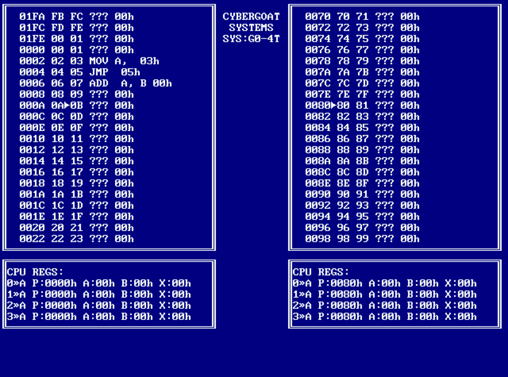

G0-4T - The Competitive Arcade Assembler

G0-4T is the game that pits two people crazy enough to play a competitive assembly language game against each other in a battle of bit twiddling skill.
The object is much like Core-War where you must destroy your opponent by forcing them to execute a bad instruction. Each player is given up to four threads, once all 4 of your threads are dead, so are you. Also, watch out for bonuses, powerups and traps.
Your interface into the game is via gamepads, which, I believe, makes this the first gamepad driven assembler ever, impressed? You can move throughout the memory space and alter its contents to build your program - what's stopping you from just scrolling to your opponents space and messing them up? well, nothing - except each player has a 64 byte "protected zone" that only that player can alter with their gamepad - if your code is outside of that area, it's in danger. There is, however, nothing stopping your opponents CODE from altering the memory inside your protected area.
This game was developed on the Raspberry-Pi using SDL and Emacs. Enjoy.
Status:
- Currently not playable
- License: GPL
- Requires: sdl1.2
Credits:
- The font is copied from the DOSBOX source.